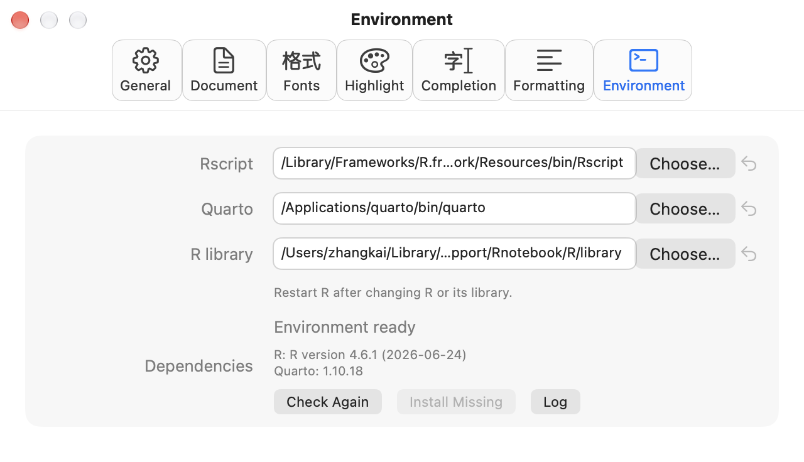

Components and Environment
Rnotebook edits documents and coordinates actions. R performs calculations. Quarto turns documents into reports. This separation helps identify why editing might work while execution or rendering does not.
What each component does
| Component | Role | Supplied by |
|---|---|---|
| Native Code / Visual editor | Markdown parsing, layout, formulas, tables, images and navigation | Bundled, adapted Edmund, swift-markdown and SwiftMath |
| Syntax and R assistance | Markdown/R highlighting, R completion and current-chunk formatting | Bundled Tree-sitter, Raven and Air |
| R / Rscript | Execute R code and create objects and plots | Your installed R; choose Rscript in settings |
| R libraries | Functions used by your code and by execution/rendering | The configured package directory and available R libraries |
| Quarto | Read QMD/RMD, execute the document and render the report | Your installed Quarto |
| PDF engines | Produce PDF output | Local TeX for LaTeX; the available Quarto toolchain for Typst |
| Finder Quick Look | Preview QMD/RMD without starting R | Bundled; Code and Visual views |
Raven supplies completion and Air formats R source; neither replaces the computing R session. Markdown is a text markup syntax. QMD adds document configuration and executable code. Common RMD chunks can also be edited and run; rendering in this app uses Quarto.
Set up the environment

- Install R and Quarto for your Mac. Open Rnotebook → Settings… → Environment.
- Check the detected Rscript and Quarto paths. Use the selection buttons to choose the corresponding executable if needed.
- Select an R package directory if you need a particular installation location. Explicitly install any missing dependencies shown by the app.
- Restart the document’s R session after changing R or its library directory.
- In a new notebook, run
R.version.stringand1 + 1inside an R chunk to check the version and calculation.
Installers and instructions: R Project, Get Started with Quarto.
Prepare what your task needs
Writing text requires only the editor. Interactive execution requires R and the runtime dependencies shown in settings. Install additional packages, such as ggplot2, when your code uses them. Quarto renders R through knitr and needs the corresponding R packages. HTML and Word do not require TeX. LaTeX PDF requires TeX, the chosen fonts and any document-specific packages; Chinese documents also need appropriate language support.
About Rnotebook → Third-Party Components and Licenses… lists bundled components and original notices. R, Quarto and packages you install belong to their respective installation environments.